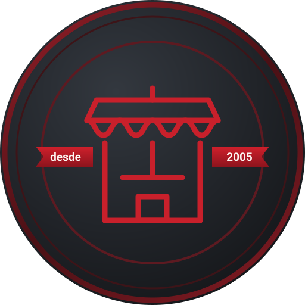

La TabaTienda 24/7Pago con Mobbex
Estado del pago
Verificando tu pago…
Volver al carritoPodés cerrar esta pantalla. Conservamos tu carrito hasta que el pago y el pedido queden confirmados.

La TabaTienda 24/7Pago con Mobbex
Verificando tu pago…
Volver al carritoPodés cerrar esta pantalla. Conservamos tu carrito hasta que el pago y el pedido queden confirmados.